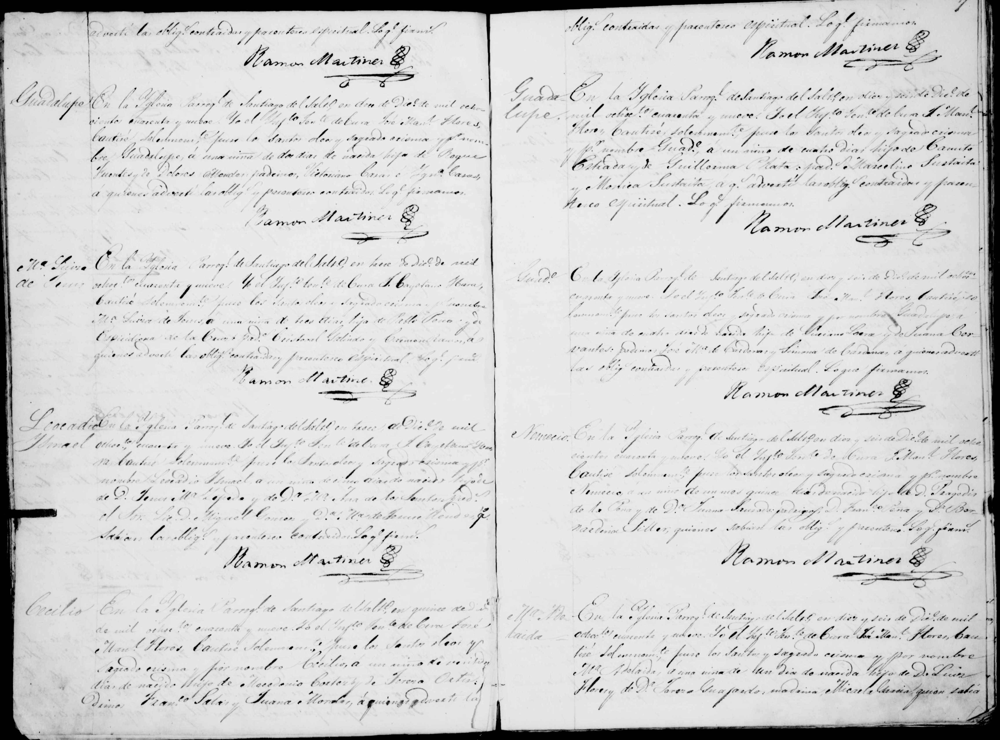

← Volver al Archivo Central
Expediente Histórico: Nemecio de la Pena

Manuscrito Original (Clic para ampliar)
Transcripción Paleográfica
En veintiuno de Diciembre de mil ochocientos cuarenta y nueve. Yo el Pbro. D. Nicolas Maria de la Cruz, cura propio y Juez Eclesiastico de esta Parroquia de San Francisco de la Villa de Patos, bautizé solemnemente, puse los santos oleos y el sagrado crisma á un niño que nació el dia diez y nueve, hijo legitimo de Calixto de la Peña y de Maria Santos Saucedo: abuelos paternos José de Jesus de la Peña y Maria Guadalupe Martinez; maternos José Maria Saucedo y Maria Antonia Garcia: se le puso por nombre Nemecio. Fueron sus padrinos José Maria Garcia y Maria de la Cruz Garcia, á quienes advertí su obligacion y parentesco espiritual; y para que conste lo firmé. Nicolas Maria de la Cruz.